岡田国神社は、中岡家に支えられた由緒ある古社です。御祭神である生国魂尊、菅原道真公は学問の神として、また相殿神の応神天皇、比洋神、神功皇后は、古くより多くの方の祈りを見守ってきました。境内は四季を通じて表情を変え、参道の緑陰、夏の蝉時雨、秋の紅葉、冬の雪化粧と、一年を通じて訪れる方を迎えています。

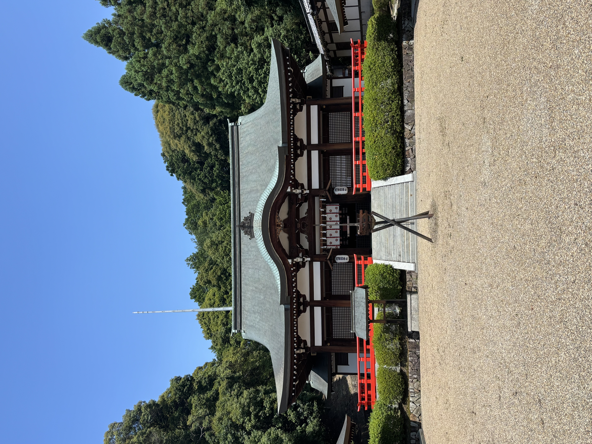
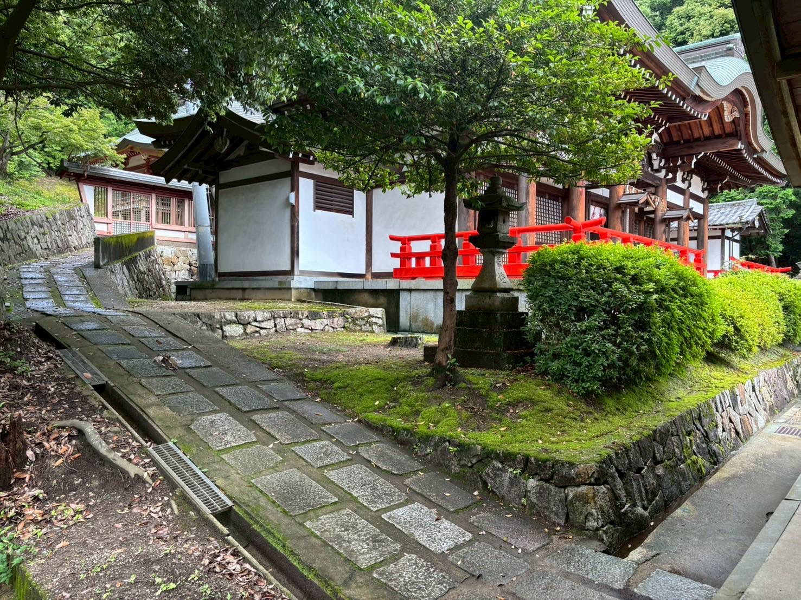
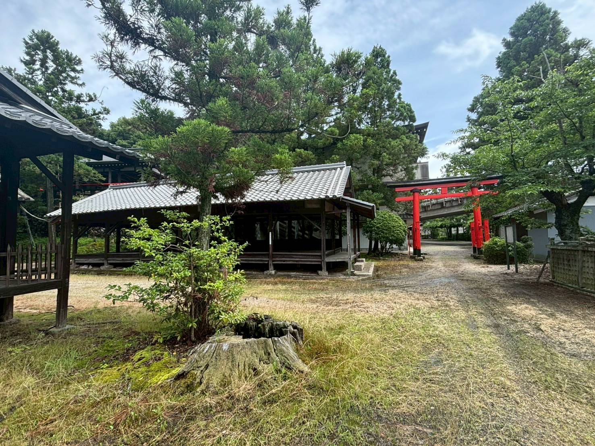
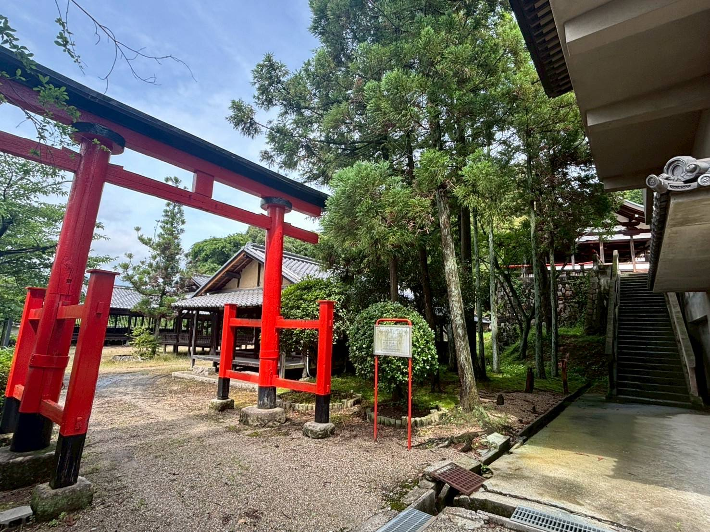
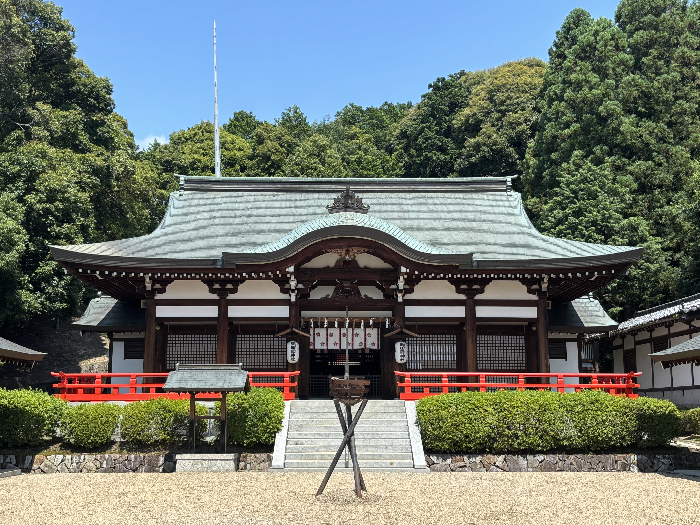

由緒・歴史
創建の伝承から現在に至るまでの歩みをご紹介します。
読む →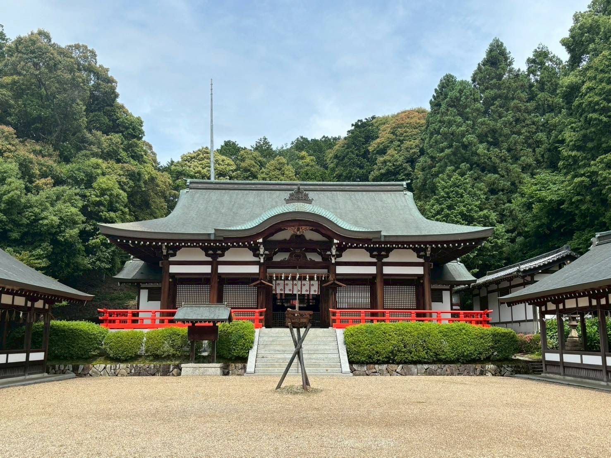
年中行事
一年を通じて執り行われる神事・お祭りのご案内です。
見る →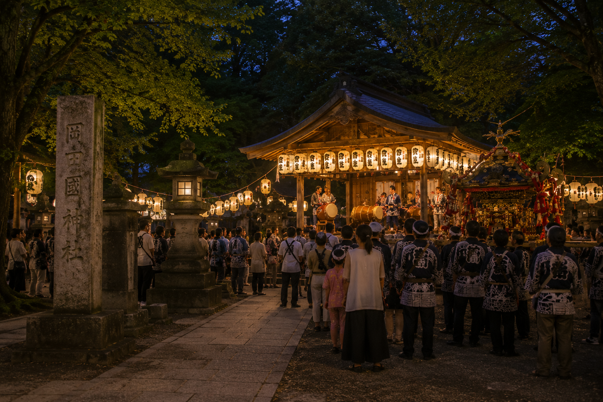
境内風景
四季折々の境内の様子をご覧いただけます。
見る →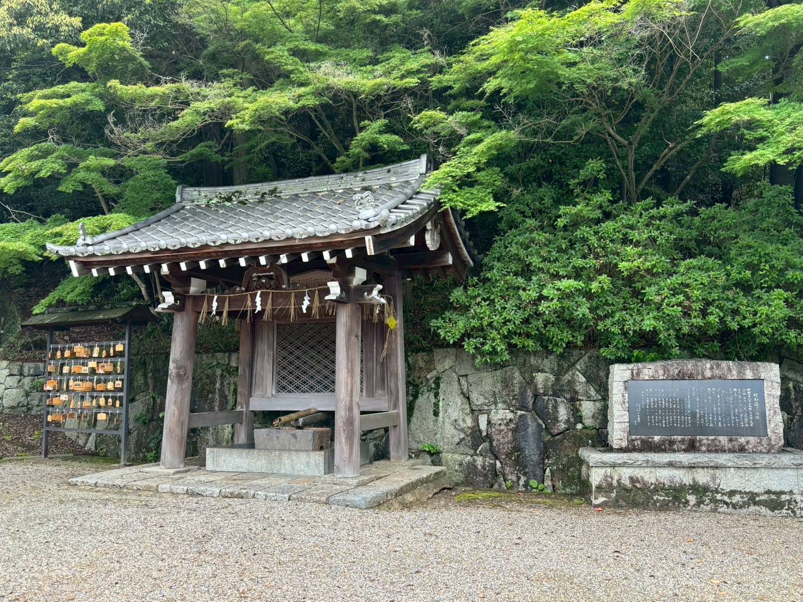
御祈祷
人生の節目や日々の願いに合わせた御祈祷をご案内します。
見る →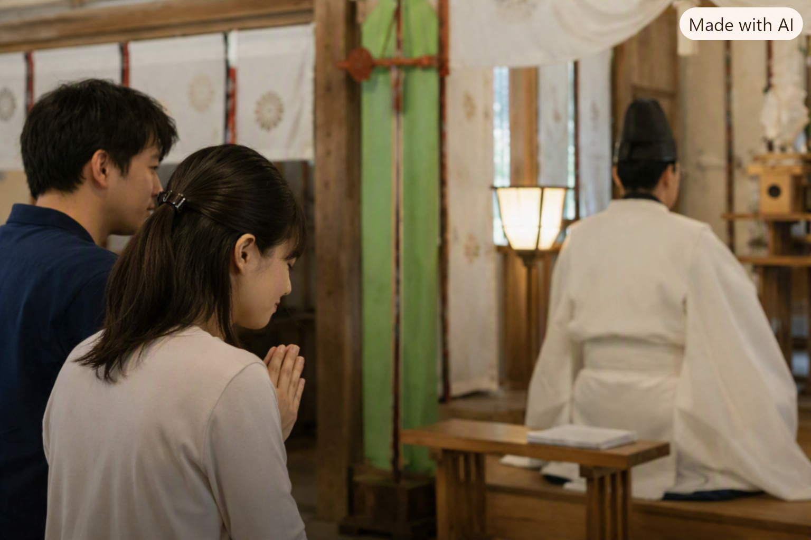
アクセス
電車・お車でのアクセス方法をご案内します。
見る →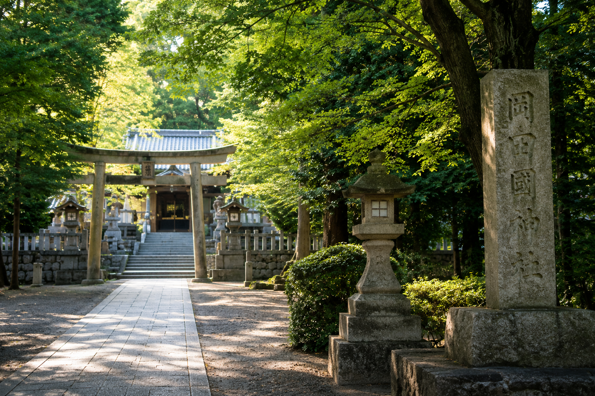
お問い合わせ
その他ご不明な点は社務所までお問い合わせください。
連絡する →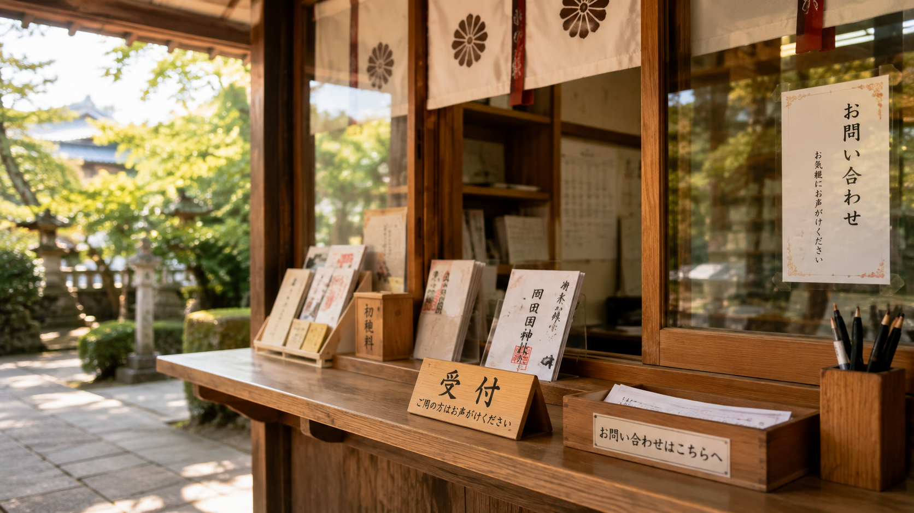
※一部生成画像を使用しているため、現物と異なる箇所があります。
お祀りする神々
岡田国神社では、学問の神を中心に、国、女性を守る神を併せてお祀りしています。
生国魂尊（いくくにたまのみこと）
土地・国土そのものを守護する神様として古くから信仰されています。
菅原道真公（すがわらのみちざねこう）
学問の神様として古くから信仰されています。
応神天皇（おうじんてんのう）
国家の繁栄・武運を守る神様
比咩神（ひめがみ）
女性の守護や縁結びなどを司る神様
神功皇后（じんぐうこうごう）
安産・子育て・女性の守護神
創建から現在まで
はるか昔から続く人々の営み
境内からは約一万三千年前の石器が多数出土しています。岡田國神社の地は、神社の創立よりはるか昔から、人々が暮らし活動してきた場所であったことがうかがえます。
生国魂尊をお祀りした創立
斉明天皇の白雉五年（654年）、生国魂尊をお祀りしたことが岡田國神社の始まりと伝えられています。以来、地域の人々の信仰を集める神社として歩みを重ねてきました。
古代から続く神域
境内や周辺からは、奈良時代前後の土器などが多数出土しています。古代よりこの地で人々の営みが続いていたことを物語る貴重な遺物です。
古い記録に刻まれた岡田國神社
清和天皇の貞観元年（859年）、『三代実録』に岡田鴨神社と岡田國神社の名が記され、岡田國神社には従五位上の神階が授けられたとされています。
「延喜式」に記された神社
醍醐天皇の勅命によって編纂された『延喜式』にも岡田國神社の名が記され、月次・新嘗の大社に列せられました。古くから格式ある神社として知られていたことがうかがえます。
八幡宮の創始
天慶元年（938年）には、応神天皇をお祀りする八幡宮が創始されたと伝えられています。長い歴史の中で、さまざまな神々への信仰が重ねられていきました。
「天神宮」として親しまれる
平安時代に天神信仰が広まる中、当社でも菅原道真公をお祀りするようになり、通称「天神宮」と称されるようになりました。
木津郷五カ村の氏神として
長い年月を通じて、岡田國神社は木津郷五カ村の氏神として地域の人々から篤い信仰を集めてきました。祭りや祈りを通して、地域の暮らしと深く結びついていきました。
郷社に列せられる
明治6年（1873年）5月、岡田國神社は郷社に列せられました。近代の神社制度のもとでも、地域を代表する神社として位置づけられました。
「延喜式内岡田國神社」として確定
明治11年（1878年）3月、『延喜式』に記された神社としての調査が行われ、「延喜式内岡田國神社」として確定されました。
発掘調査で明らかになった古代の姿
平成29年（2017年）、国道163号木津東バイパス事業に伴う発掘調査が行われ、奈良・平安時代を中心とする遺構が確認されました。長い歴史を裏付ける貴重な発見となりました。
受け継がれる祈りと信仰
飛鳥時代から続くと伝えられる岡田國神社は、木津の地に根を下ろし、地域の人々の心のよりどころとして今日まで歩み続けています。古代から受け継がれてきた祈りと信仰は、今も大切に守られています。
各行事をクリックすると、詳しいご案内をご覧いただけます。
写真をクリックすると、その写真にまつわるお話をご覧いただけます。
人生の節目に、心を込めて
岡田国神社では、人生の節目や日々の願いに合わせた
各種御祈祷を
承っております。
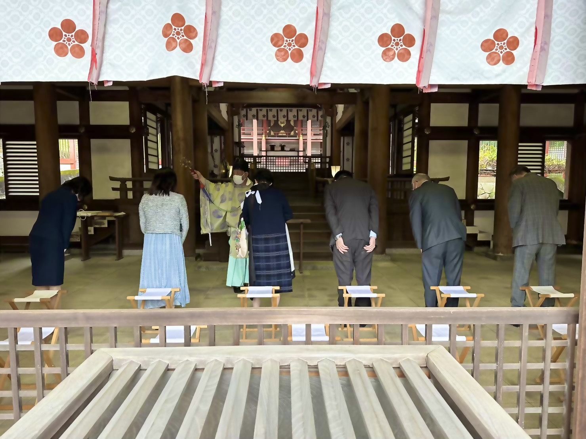
ご祈願の種類
内祭式
日本人には古くから人生の節目に神様にお参りし、これまでの成長に感謝したり、
今後の安寧や、諸願成就を祈願する習わしがあります。初宮詣、合格祈願、厄除祈願、
安産祈願をはじめ、様々なご祈祷を執り行っています。
初宮詣
お子様の健やかな成長と、 ご家族の末永い幸せを願います。
七五三詣
お子様の健やかな成長を祝い、 これからの無病息災を願います。
身体健全
日々の健康と健やかな暮らしを 願います。
交通安全
車や交通に関わる安全と、 道中の無事を願います。
安産祈願
母子ともに健やかに出産を迎えられるよう 願います。
合格祈願
学問の神様である菅原道真公の 御神徳をいただき、学業の成就を願います。
外祭典
ご指定の場所へ神職が伺い、祭典を執り行います。
地鎮祭
工事に先立ち、その土地の神様にご挨拶し、 工事の安全と土地の安寧を願います。
上棟祭
建物の棟上げに際し、 工事の安全と建物の末永い繁栄を願います。
竣工祭
建物の完成を神様に奉告し、 建物の末永い安全と繁栄を願います。
清祓い
新居や建物を清め、 これからの暮らしの安寧を願います。
神棚奉鎮祭
神棚を新たにお祀りする際に、 神様をお迎えし末永いご加護を願います。
その他各種祭典
ご家庭や企業、土地などに関する 各種祭典についてもご相談ください。
※ 内祭式・外祭典は必ずご予約をお願いします
御祈祷の流れ
受付
社務所にて御祈祷の受付をお願いいたします。
御祈祷
神職がご神前にて願意を奏上し、 心を込めてご祈願いたします。
授与品のお渡し
御祈祷後、御札などの授与品をお渡しいたします。
御祈祷のご案内
受付時間
午前9時〜午後4時
初穂料
5000円
所要時間
30分から1時間程度
受付場所
岡田国神社 社務所
御祈祷についてご不明な点がございましたら、 社務所までお問い合わせください。
お問い合わせ所在地
〒619-0214 京都府 木津川市 木津大谷105番地
岡田国神社 社務所
電車お越しの方
- JR関西本線・奈良線・学研都市線「木津」駅より徒歩約15分
お車でお越しの方
- 鳥居を潜っていただくと向かって左手に駐車場がございますので、
空いている所にお止めください。
受付時間
- 社務所：午前9時〜午後4時30分（年中無休）
- ご祈祷受付：午前9時〜午後4時（最終受付）